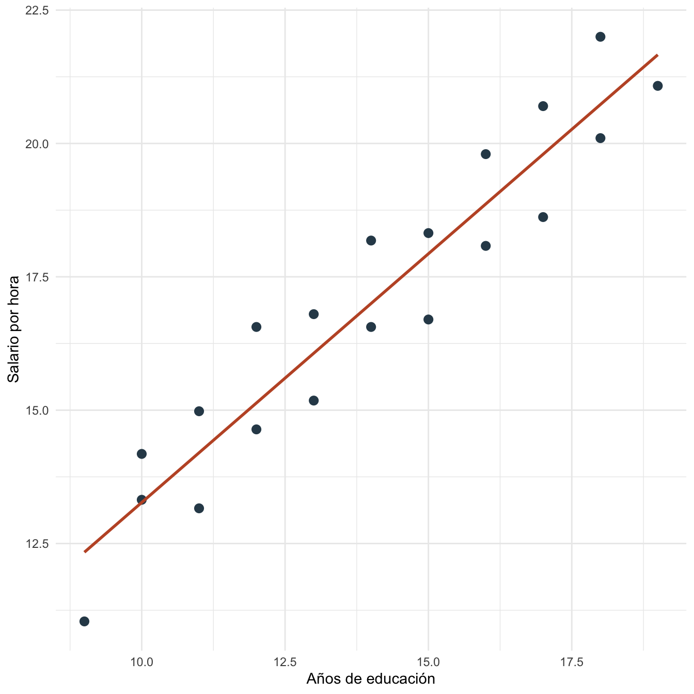
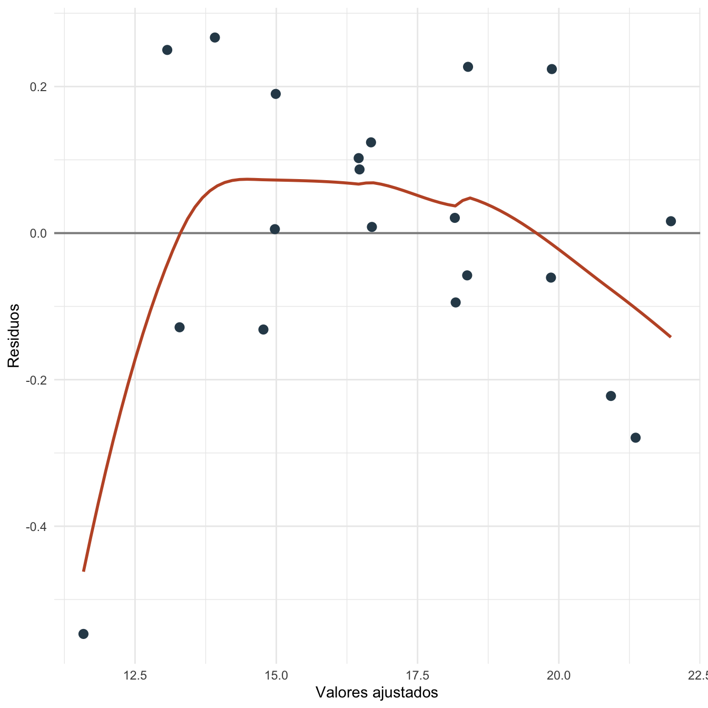
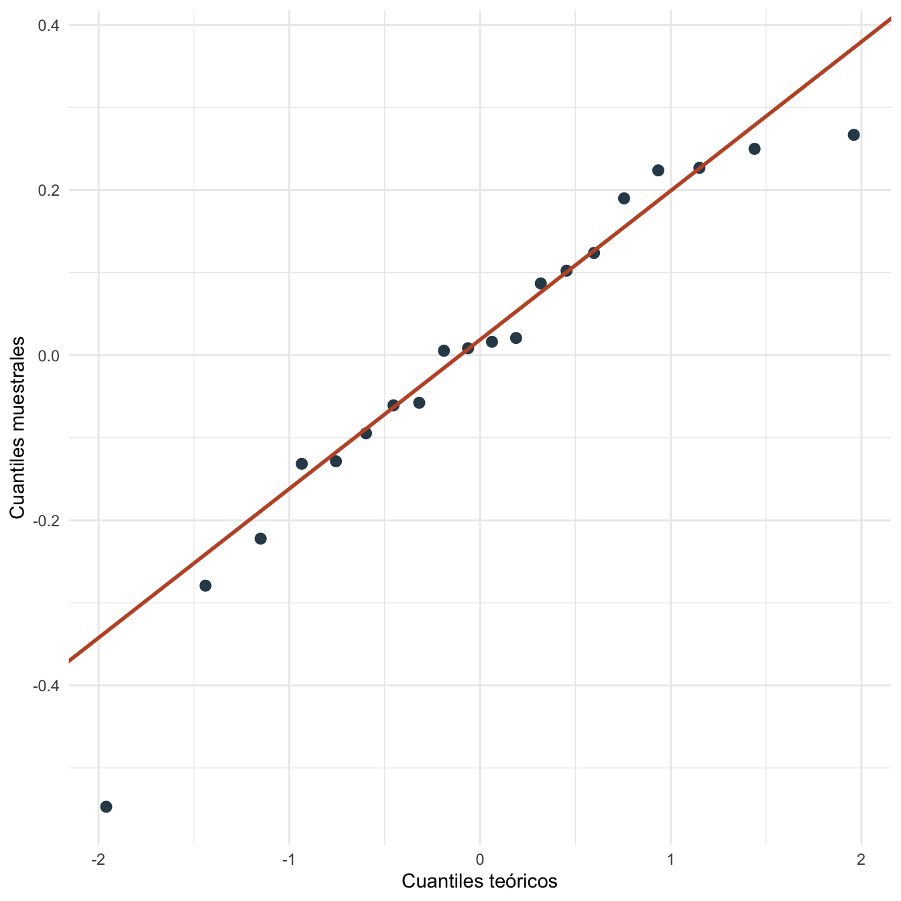
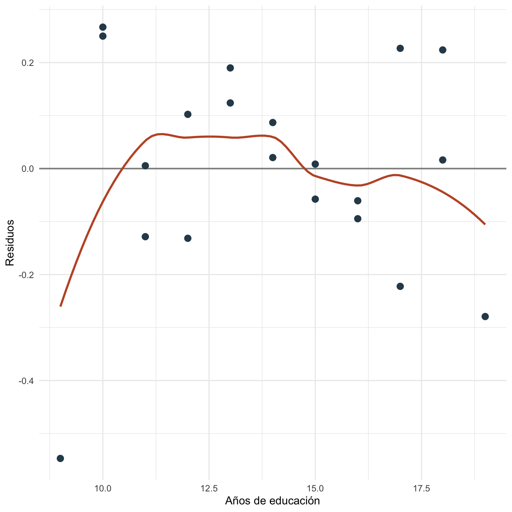
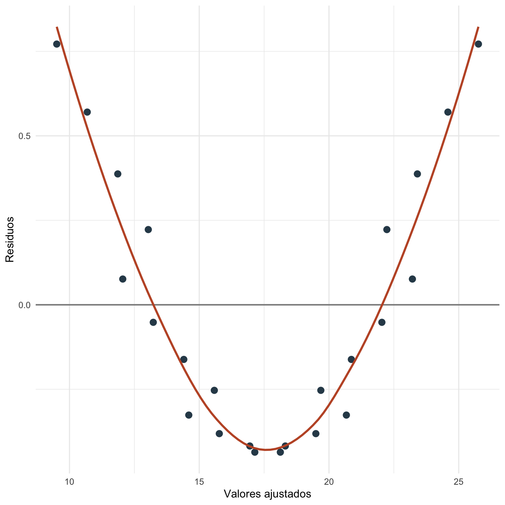

Capítulo 6 Supuestos de MCO: práctica
6.1 Objetivos de la práctica
Al finalizar esta práctica podrás:
- Estimar un modelo lineal en R, Stata y Python usando los mismos datos.
- Calcular residuos y valores ajustados para revisar diagnósticos básicos.
- Evaluar visualmente linealidad, residuos centrados alrededor de cero y normalidad aproximada.
- Comparar resultados entre R, Stata y Python sin escribir coeficientes a mano.
6.2 Pregunta aplicada
Queremos estudiar si el salario por hora se asocia con educación y experiencia en una muestra pequeña. La pregunta aplicada es:
¿El modelo lineal produce residuos que se comportan de manera razonable para una primera aproximación a los supuestos clásicos de MCO?
Estimaremos:
\[ \text{salario\_hora}_i = \beta_0 + \beta_1\text{educacion}_i + \beta_2\text{experiencia}_i + \epsilon_i. \]
Esta práctica es diagnóstica y descriptiva. Los problemas de heterocedasticidad, autocorrelación, endogeneidad y variables instrumentales se estudian en detalle más adelante.
6.3 Datos
Usaremos una base reproducible creada en el mismo capítulo. La variable ruido representa diferencias no observadas que afectan el salario.
| educacion | experiencia | ruido | salario_hora |
|---|---|---|---|
| 9 | 2 | -0.8 | 11.04 |
| 10 | 4 | 0.2 | 13.32 |
| 10 | 6 | 0.5 | 14.18 |
| 11 | 3 | -0.4 | 13.16 |
| 11 | 7 | 0.3 | 14.98 |
| 12 | 5 | -0.2 | 14.64 |
| 12 | 9 | 0.6 | 16.56 |
| 13 | 4 | -0.1 | 15.18 |
| 13 | 8 | 0.4 | 16.80 |
| 14 | 6 | 0.0 | 16.56 |
| 14 | 10 | 0.5 | 18.18 |
| 15 | 5 | -0.3 | 16.70 |
| 15 | 9 | 0.2 | 18.32 |
| 16 | 7 | -0.2 | 18.08 |
| 16 | 11 | 0.4 | 19.80 |
| 17 | 6 | -0.1 | 18.62 |
| 17 | 12 | 0.3 | 20.70 |
| 18 | 8 | 0.1 | 20.10 |
| 18 | 13 | 0.6 | 22.00 |
| 19 | 10 | -0.2 | 21.08 |

Figura 6.1: Relación entre educación y salario por hora en los datos de práctica
6.4 Estimación en R
Estimamos el modelo lineal y guardamos los resultados que usaremos en la interpretación y en la comparación con otros programas.
#>
#> Call:
#> lm(formula = salario_hora ~ educacion + experiencia, data = datos_sup)
#>
#> Residuals:
#> Min 1Q Median 3Q Max
#> -0.54699 -0.10309 0.01233 0.14038 0.26691
#>
#> Coefficients:
#> Estimate Std. Error t value Pr(>|t|)
#> (Intercept) 4.98394 0.24161 20.63 1.80e-13 ***
#> educacion 0.64000 0.02262 28.29 9.73e-16 ***
#> experiencia 0.42152 0.02238 18.84 7.95e-13 ***
#> ---
#> Signif. codes: 0 '***' 0.001 '**' 0.01 '*' 0.05 '.' 0.1 ' ' 1
#>
#> Residual standard error: 0.2145 on 17 degrees of freedom
#> Multiple R-squared: 0.9953, Adjusted R-squared: 0.9947
#> F-statistic: 1785 on 2 and 17 DF, p-value: < 2.2e-16| termino | estimacion | error_estandar | t | p_valor |
|---|---|---|---|---|
| (Intercept) | 4.984 | 0.242 | 20.628 | 0 |
| educacion | 0.640 | 0.023 | 28.289 | 0 |
| experiencia | 0.422 | 0.022 | 18.836 | 0 |
El siguiente gráfico muestra valores ajustados y residuos, que son los objetos principales para revisar diagnósticos iniciales.

Figura 6.2: Residuos frente a valores ajustados del modelo
Para revisar normalidad aproximada usamos un gráfico Q-Q de los residuos. Como la muestra tiene solo \(n=20\), este gráfico debe leerse como una señal descriptiva: con tan pocas observaciones, pequeñas desviaciones visuales no son evidencia suficiente para concluir que la normalidad falla o se cumple.

Figura 6.3: Gráfico Q-Q de los residuos estimados
Para revisar linealidad, graficamos los residuos contra un regresor. Si hubiera un patrón curvo muy marcado, el modelo lineal estaría dejando estructura sistemática sin explicar.

Figura 6.4: Residuos frente a educación
También es útil contrastar el caso anterior con un ejemplo donde la forma funcional lineal deja un patrón visible en los residuos.

Figura 6.5: Patrón de residuos cuando se ajusta una recta a una relación curva
En el mini-contraste, la curva suave de los residuos no queda alrededor de cero de forma aleatoria. Ese patrón sugiere que una recta está omitiendo una parte sistemática de la relación. Una corrección natural sería discutir una forma funcional distinta, por ejemplo incluir un término cuadrático, antes de pasar a problemas más avanzados.
6.5 Interpretación
La pendiente de educación es 0.640. Manteniendo constante la experiencia, un año adicional de educación se asocia con 0.640 unidades más de salario por hora en esta muestra.
El coeficiente de experiencia es 0.422. El \(R^2\) del modelo es 0.995 y el error estándar residual es 0.214.
Los residuos tienen media -0.000, como ocurre en un modelo MCO con intercepto. La correlación entre residuos y valores ajustados es -0.000, y la correlación entre residuos y educación es 0.000.
Estos diagnósticos no prueban formalmente todos los supuestos. Sirven para detectar señales visibles de problemas. Las pruebas y correcciones para heterocedasticidad, autocorrelación y endogeneidad se trabajan en capítulos posteriores.
6.6 Estimación en Stata
El mismo ejercicio puede correrse en Stata con estos comandos:
clear
input educacion experiencia ruido
9 2 -0.8
10 4 0.2
10 6 0.5
11 3 -0.4
11 7 0.3
12 5 -0.2
12 9 0.6
13 4 -0.1
13 8 0.4
14 6 0.0
14 10 0.5
15 5 -0.3
15 9 0.2
16 7 -0.2
16 11 0.4
17 6 -0.1
17 12 0.3
18 8 0.1
18 13 0.6
19 10 -0.2
end
gen salario_hora = 4.8 + 0.72 * educacion + 0.28 * experiencia + ruido
reg salario_hora educacion experiencia
predict ajustado, xb
predict residuo, resid
scatter residuo ajustado, yline(0)
qnorm residuo
scatter residuo educacion, yline(0)Los resultados esperados son los mismos coeficientes que Stata debe reproducir si usa exactamente la misma base y la misma especificación:
| Término | Estimación aproximada | Error estándar aproximado |
|---|---|---|
| Constante | 4.984 | 0.242 |
| Educación | 0.640 | 0.023 |
| Experiencia | 0.422 | 0.022 |
| \(R^2\) | 0.995 |
6.7 Estimación en Python y Google Colab
Para correr esta práctica en Google Colab, abre un cuaderno nuevo y ejecuta primero:
# Si estás en Google Colab, ejecuta esta celda primero
!pip -q install pandas numpy statsmodels matplotlib seabornLuego estima el modelo y genera diagnósticos:
import pandas as pd
import statsmodels.api as sm
import matplotlib.pyplot as plt
import seaborn as sns
import scipy.stats as stats
datos_sup = pd.DataFrame({
"educacion": [9, 10, 10, 11, 11, 12, 12, 13, 13, 14,
14, 15, 15, 16, 16, 17, 17, 18, 18, 19],
"experiencia": [2, 4, 6, 3, 7, 5, 9, 4, 8, 6,
10, 5, 9, 7, 11, 6, 12, 8, 13, 10],
"ruido": [-0.8, 0.2, 0.5, -0.4, 0.3, -0.2, 0.6, -0.1, 0.4, 0.0,
0.5, -0.3, 0.2, -0.2, 0.4, -0.1, 0.3, 0.1, 0.6, -0.2]
})
datos_sup["salario_hora"] = (
4.8 + 0.72 * datos_sup["educacion"] +
0.28 * datos_sup["experiencia"] +
datos_sup["ruido"]
)
X = sm.add_constant(datos_sup[["educacion", "experiencia"]])
y = datos_sup["salario_hora"]
modelo = sm.OLS(y, X).fit()
print(modelo.summary())
datos_sup["ajustado"] = modelo.fittedvalues
datos_sup["residuo"] = modelo.residsns.regplot(
data=datos_sup,
x="ajustado",
y="residuo",
lowess=True,
scatter_kws={"color": "#2f4858"},
line_kws={"color": "#C0562F"}
)
plt.axhline(0, color="grey", linewidth=1)
plt.xlabel("Valores ajustados")
plt.ylabel("Residuos")
plt.show()
stats.probplot(datos_sup["residuo"], dist="norm", plot=plt)
plt.show()
sns.regplot(
data=datos_sup,
x="educacion",
y="residuo",
lowess=True,
scatter_kws={"color": "#2f4858"},
line_kws={"color": "#C0562F"}
)
plt.axhline(0, color="grey", linewidth=1)
plt.xlabel("Años de educación")
plt.ylabel("Residuos")
plt.show()Los resultados esperados son los mismos coeficientes que Python debe reproducir si usa exactamente la misma base y la misma especificación:
| Término | Estimación aproximada | Error estándar aproximado |
|---|---|---|
| Constante | 4.984 | 0.242 |
| Educación | 0.640 | 0.023 |
| Experiencia | 0.422 | 0.022 |
| \(R^2\) | 0.995 |
6.8 Comparación R, Stata y Python
Si la base y la especificación son idénticas, R, Stata y Python entregan los mismos coeficientes de MCO. Las diferencias importantes están en cómo cada programa calcula, guarda y grafica residuos, valores ajustados y diagnósticos.
| Tarea | R | Stata | Python |
|---|---|---|---|
| Estimar MCO | lm(y ~ x1 + x2, data = datos) |
reg y x1 x2 |
sm.OLS(y, X).fit() |
| Valores ajustados | fitted(modelo) |
predict ajustado, xb |
modelo.fittedvalues |
| Residuos | resid(modelo) |
predict residuo, resid |
modelo.resid |
| Q-Q plot | stat_qq() |
qnorm residuo |
stats.probplot() |
6.9 Errores frecuentes en la práctica
- Tratar el diagnóstico visual como prueba definitiva. Los gráficos orientan, pero no reemplazan argumentos de identificación ni pruebas formales.
- Confundir residuos centrados con exogeneidad. Que los residuos tengan media cero no prueba que \(\mathbb{E}[\epsilon \mid X]=0\).
- Mirar solo el \(R^2\). Un buen ajuste no garantiza que los supuestos clásicos se cumplan.
- Cambiar la muestra entre programas. La comparación R-Stata-Python solo es válida si datos, variables y especificación son exactamente los mismos.
- Convertir este capítulo en heterocedasticidad o endogeneidad. Aquí solo revisamos señales iniciales; esos problemas se estudian después.
6.10 Ejercicios computacionales
- Agrega una variable
experiencia2 = experiencia^2y estima el modelo con ese término. ¿Cambian los residuos frente a educación? - Cambia dos valores de
ruidopara crear observaciones extremas. ¿Qué ocurre con el gráfico Q-Q? - Estima el modelo solo con educación. ¿Cómo cambian el coeficiente de educación y el \(R^2\)?
- Repite el ejercicio en Stata y Python. Verifica que los coeficientes coincidan con R.
- Escribe un párrafo explicando qué diagnósticos visuales te parecen más preocupantes y cuáles no.